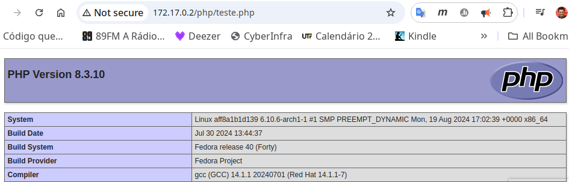
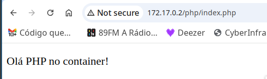
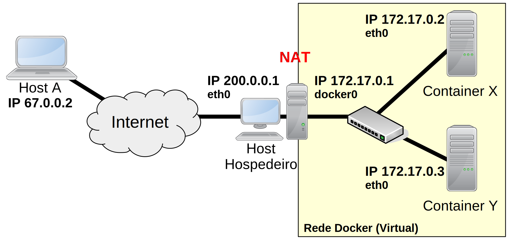

Tarefas comuns em imagens e containers Dockers
A seguir são apresentados alguns exemplos de imagens e criação de containers. A ideia é apresentar mais em detalhes algumas opções normalmente utilizadas do mundo Docker, bem como em que tipo de situações elas podem serem aplicadas.
Determinando o que será executado por padrão na imagem/container
No Docker, existem duas maneiras de definir o comando principal que será executado na inicialização do container. Esse comando geralmente representa a função central do container, ou seja, o propósito para o qual ele foi criado. Caso esse comando seja interrompido, é provável que o container também seja finalizado, já que sua função principal não estará mais em execução.
Na criação de imagens Docker, há duas formas de se determinar qual e
como o comando principal será executado, sendo essas identificadas pelas
instruções: CMD e ENTRYPOINT. A seguir veremos a diferença entre
essas instruções.
CMD
Utilizando o CMD no Dockerfile, é possível determinar o comando que
será executado quando o container for criando, com isso não é necessário
indicar o comando que deve ser executado pelo container quando se
executa o docker run. Tal prática facilita a vida de quem for executar
o container, pois a pessoal não precisa digitar tal comando na frente do
docker run, o que naturalmente também evita erros.

Se forem passadas mais de uma linha CMD no Dockerfile,
será executada apenas a última linha.
A seguir é apresentado um exemplo de um Dockerfile, que cria uma imagem
baseada no Fedora Linux, para executar um servidor Apache HTTTP. Então a
principal função desse container é executar o servidor HTTP, desta forma
o comando CMD, do Dockerfile, é utilizado justamente para indicar que
deve-se iniciar o processo /usr/sbin/httpd, que é responsável pelo
servidor HTTP.
# Version 0.1
FROM fedora
MAINTAINER Luiz Arthur "luizsantos@utfpr.edu.br"
RUN dnf update -y
RUN dnf install httpd net-tools -y
RUN echo "Olá com <b> build" > /var/www/html/index.html''
CMD ["/usr/sbin/httpd", "-DFOREGROUND"]
Após criar/editar o Dockerfile, é necessário gerar a imagem. Feito isso é possível criar containers a partir dessa imagem, tal como:
- Gerar a imagem:
$ docker build -t="servidor/build_fedora_apache" .
- Criar container a partir da imagem gerada:
$ docker run --rm --name servidorFedApache3 -d servidor/build_fedora_apache
- Verificar se o container está em execução (opcional):
$ docker ps
CONTAINER ID IMAGE COMMAND CREATED STATUS PORTS NAMES
76b72b9eeb8f servidor/build_fedora_apache "/usr/sbin/httpd -DF…" 7 seconds ago Up 7 seconds servidorFedApache3
É importante saber que o comando a ser executado pela instrução CMD
pode ser sobreposto no momento da criação do container, ou seja via
linha de comando, por exemplo:
$ docker run -it --rm --name servidorFedApache3 -d servidor/build_fedora_apache /bin/bash
No comando anterior, o container gerado pela a imagem criada
anteriormente executa o comando inicial /bin/bash (note que também foi
incluído o -it, para esse exemplo, só para poder acessar o terminal do
container). Ou seja, neste caso não será executado o /usr/sbin/httpd,
mas sim o /bin/bash, já que isso foi determinado via linha de comando.

Se você tentar acessar o servidor HTTP no container anterior, você
verá que esse não está em execução, já que foi executado o
bash ao invés do httpd.
ENTRYPOINT
O comportamento de mudar o comando principal na linha de execução do
Docker, tal como faz o CMD, pode ser desejado em alguns casos.
Todavia, quando isso não for desejável é possível utilizar o
ENTRYPOINT. Ou seja, o ENTRYPOINT não permite que o comando
principal seja alterado facilmente no docker run. Para isto basta
trocar o CMD por ENTRYPOINT, tal como:
# Version 0.1
FROM fedora
MAINTAINER Luiz Arthur "luizsantos@utfpr.edu.br"
RUN dnf update -y
RUN dnf install httpd net-tools -y
RUN echo "Olá com <b> build" > /var/www/html/index.html''
ENTRYPOINT ["/usr/sbin/httpd", "-DFOREGROUND"]
Agora vamos gerar a imagem:
$ docker build -t="servidor/build_fedora_apache" .
...
Step 6/6 : ENTRYPOINT ["/usr/sbin/httpd", "-DFOREGROUND"]
---> Using cache
---> 06181e2db3ad
...
Com a imagem pronta vamos tentar executar o container passando um
comando via docker run:
$ docker run -it --rm --name servidorFedApache3.1 -d servidor/httpd /bin/bash
7840c93ed7ec50a79764f7ecb0c8ccdf07cf638d340ac4ede1f8368b4382ffbc
Agora, com o ENTRYPOINT, ao tentar verificar os containers em
execução, não será possível encontrar o container
servidorFedApache3.1, pois a instrução ENTRYPOINT, não permitiu
executá-lo com o bash. Todavia se não for passada nenhum comando no
docker run ele será executado com o processo httpd.
Juntando ENTRYPOINT e CMD
É possível utilizar em conjunto o ENTRYPOINT com o CMD, neste caso
primeiro deve ser determinado via ENTRYPOINT o comando que
obrigatoriamente deve ser utilizado ao se criar o container, e o que for
passado via CMD, serão as opções do comando no ENTRYPOINT. Desta
forma, se não for passada nenhum comando/opção no docker run será
executado o comando do ENTRYPOINT com as opções passadas do CMD.
Caso for passado algum comando via CMD, esse ou esses, serão na
verdade opções para o comando do `ENTRYPOINT. Ou seja, o comando não
pode ser alterado, mas as opções/parâmetros sim. Vamos ver o exemplo a
seguir:
# Version 0.1
FROM fedora
MAINTAINER Luiz Arthur "luizsantos@utfpr.edu.br"
RUN dnf update -y
RUN dnf install httpd net-tools -y
RUN echo "Olá com <b> build" > /var/www/html/index.html''
ENTRYPOINT ["/usr/sbin/httpd"]
CMD ["-DFOREGROUND"]
Exemplos de criação de containers utilizando essa imagem:
- Sem nenhum comando/parâmetros:
$ docker run --name servidorFedApache3.3 -d servidor/httpd
Vai executar /usr/sbin/httpd -DFOREGROUND.
- Passando parâmetros:
$ docker run --name servidorFedApache3.3 -d servidor/httpd -v
Vai executar Vai executar /usr/sbin/httpd -v. Neste exemplo o servidor
HTTP, vai mostrar a versão do servidor (não vai executar tal servidor),
isso poderá ser visto com o `log, tal como:
$ docker logs servidorFedApache3.3
Server version: Apache/2.4.62 (Fedora Linux)
Server built: Aug 1 2024 00:00:00
- Tentando executar o comando
echo:
$ docker run --name servidorFedApache3.3 -d servidor/httpd echo -v
Devido ao ENTRYPOINT não será executado o echo, mas sim o echo
será passado como um parâmetro para o httpd, como tal parâmetro não
existe no httpd será retornado um erro, que pode ser visto no log.
Por fim, é possível substituir o ENTRYPOINT, no docker run, mas para
isso é necessário utilizar a opção --entrypoint, ou seja, é necessário
explicitar a intenção de trocar o comando principal. Exemplo:
$ docker run --name servidorFedApache3.3 --entrypoint /bin/bash -d servidor/httpd
Copiando arquivos do host para a a imagem
Outra tarefa corriqueira no mundo dos containers é copiar arquivos para
dentro da imagem, isso permite personalizar as imagens e pode facilitar
a tarefa de configuração ou customização. No Docker há duas instruções
que permitem copiar arquivos para a imagem, sendo essas: COPY e ADD.
Assim, para entender melhor como funciona esse processo de cópia para a imagem e o motivo de seu uso, vamos criar outro Dockerfile/imagem. Neste Dockerfile, utilizaremos:
- A imagem
servidor/build_fedora_apachefeita no exemplo anterior; - Em seguida será instalado os pacotes
phpe oprocps(oprocpsnão é necessário para o servidor, mas pode ser útil para testes, caso algo dê errado, pois esse fornece o comandops); - Depois de instalar o PHP, vamos criar um script para iniciar o PHP e o Apache;
- Por fim, vamos criar uma página PHP para testar o servidor.
Para efetivar na prática os passos citados anteriormente, da seguinte forma:
- Iniciamos criando o arquivo Dockerfile e para esse exemplo não
vamos utilizar o nome padrão (
Dockerfile):
vi Dockerfile-php
- Editamos o conteúdo para atender o que foi determinado anteriormente:
FROM servidor/build_fedora_apache
MAINTAINER Luiz Arthur "luizsantos@utfpr.edu.br"
RUN dnf update -y
RUN dnf install -y php procps
RUN mkdir /run/php-fpm/
RUN mkdir -p /var/www/html/php
RUN echo -e "#!/bin/bash \n/sbin/php-fpm &\n/sbin/httpd -DFOREGROUND \n/bin/read" > /sbin/startServer.sh
RUN chmod a+x /sbin/startServer.sh
RUN echo "<?php phpinfo(); ?>" > /var/www/html/php/teste.php
CMD ["/sbin/startServer.sh"]
Neste caso, tal arquivo tem basicamente seguintes instruções (resumidas):
FROM ...: para indicar que vamos utilizar a imagem com o servidor HTTP criando anteriormente;RUN dnf ...: para realizar uma atualização do sistema e então atualizar e instalar os pacotes necessários (PHP e procps);RUN mkdir ...: cria diretórios necessários para o PHP;RUN echo ... startServer.sh: que está criando um script para iniciar o PHP e depois o Apache;RUN chmod ...: dá permissão de execução ao script;RUN echo ... teste.php: cria um arquivo com uma página PHP básica, só para testar se o PHP está funcionando;CMD ...: comando que vai ser executado quando o container for criado.
- Criamos a imagem, apontando para o arquivo Dockerfile:
$ docker build -f Dockerfile-php -t="servidor/build_fedora_apache_php" .
Tem que utilizar o -f, já que não foi utilizado o nome
padrão de arquivo Dockerfile.
- Agora é possível criar um container utilizando a imagem nova:
$ docker run --rm --name servidorFedApache_PHP -d servidor/build_fedora_apache_php
- Depois desses passos, o container criado deve aparecer na listagem
do comando
docker ps. Bem como, será possível acessar a página PHP no servidor sendo executado no container, tal como mostra a Figura 9.

Para acessar a página PHP, você deve descobrir o IP do container (tal
como fizemos anteriormente) e acessar o
http://ip_container/php/teste.php - que é o caminho que
configuramos, onde está a página PHP.
Uma importante observação deve ser feitas aqui: Para a criação desta
imagem, utilizamos o RUN para criar o script, isso foi feito com
a seguinte instrução:
RUN echo -e "#!/bin/bash \n/sbin/php-fpm &\n/sbin/httpd -DFOREGROUND \n/bin/read" > /sbin/startServer.sh
Então é possível utilizar o RUN para criar o script, mas isso pode
deixar o entendimento confuso (muito coisa em uma linha só), então há
grandes chances de erro. Outra questão ainda relacionada à isso é: “e se
o administrador precisar criar um script ainda maior e mais
complexo?”. Bem uma possível solução é apresentada a seguir com o COPY
e o ADD.
Copiando arquivos para imagem com o COPY
Desta forma, para melhorar o Dockerfile anterior, é possível utilizar a
instrução COPY, para copiar um script do host para a imagem que
está sendo criada. Assim, é possível utilizar um editor de textos para
criar mais facilmente o script e depois o COPY vai copia-lo para a
imagem.
Então vamos alterar o Dockerfile anterior, para que este utilize o
COPY, tal como:
- Editamos o arquivo Dockerfile e adicionamos a instrução
COPY, tal como a seguir:
$ vi Dockerfile-php
FROM servidor/build_fedora_apache
MAINTAINER Luiz Arthur "luizsantos@utfpr.edu.br"
RUN dnf update -y
RUN dnf install -y php procps
RUN mkdir /run/php-fpm/
RUN mkdir -p /var/www/html/php
COPY startServer.sh /sbin/startServer.sh
RUN chmod a+x /sbin/startServer.sh
RUN echo "<?php phpinfo(); ?>" > /var/www/html/php/teste.php
CMD ["/sbin/startServer.sh"]
- Após isso, criamos o arquivo
startServer.shno host hospedeiro, tal arquivo será copiado para a imagem:
$ vi startServer.sh
#!/bin/bash
/sbin/php-fpm &
/sbin/httpd -DFOREGROUND
/bin/read
sleep infinity
Alguns pontos importantes devem ser destacados aqui:
-
No arquivo Dockerfile foi utilizado o caminho relativo do arquivo
startServer.sh. Desta forma, esperá-se que tal arquivo esteja no mesmo diretório do arquivo Dockerfile. Todavia, pode ser recomendável utilizar o caminho absoluto, principalmente se o arquivo não estiver no mesmo local que o Dockerfile. -
É muito importante que no inicio do Bash script tenha o shebang (
#!/bin/bash), para informar quem vai executar os comandos, caso contrário o script não será executado no inicio do container e tudo vai falhar; -
No final do script criando aqui, foram inseridas duas formas de impedir que o script execute e depois termine, sendo essas formas:
/bin/reade osleep infinity. Contudo isso seria desnecessário, já que teoricamente o comando/sbin/httpd -DFOREGROUND, fica executando indefinidamente. Entretanto é preciso ter em mente que é necessário que o script deve ficar em execução, pois caso contrário o container vai parar - dependendo o caso dá a impressão que ele nem foi executado. -
Em caso de problemas na hora de executar o container lembre-se de utilizar o
logou entrar no container utilizando obash, para verificar o que está causando o problema (qual o motivo do container não ficar em execução?);
- Geramos a imagem:
$ docker build -f Dockerfile-php -t="servidor/build_fedora_apache_php" .
- Criamos um container baseada nessa imagem:
$ docker run --rm --name servidorFedApache_PHP2 -d servidor/build_fedora_apache_php
- Agora é só verificar se está tudo correto, tal como:
$ docker ps
CONTAINER ID IMAGE COMMAND CREATED STATUS PORTS NAMES
9fde9bf8d3dd servidor/build_fedora_apache_php "/sbin/startServer.sh" 10 minutes ago Up 10 minutes servidorFedApache_PHP2
aff8a1b1d139 05fe3484d188 "/sbin/startServer.sh" 44 minutes ago Up 44 minutes servidorFedApache_PHP
Assim, utilizamos o COPY para facilitar o processo de criação de
arquivos dentro da imagem Docker. A seguir é apresentado como fazer o
mesmo, mas utilizando o ADD em contextos um pouco diferentes.
Utilizando o ADD
O ADD é similar ao COPY, todavia ele permite copiar arquivos de URL
(ex. Internet) e descompactar arquivos que estão no host hospedeiro
para a imagem.
Para ver a diferença, vamos pegar o exemplo anterior e substituir o
COPY por ADD, tal como:
$ vi Dockerfile-php
FROM servidor/build_fedora_apache
MAINTAINER Luiz Arthur "luizsantos@utfpr.edu.br"
RUN dnf update -y
RUN dnf install -y php procps
RUN mkdir /run/php-fpm/
RUN mkdir -p /var/www/html/php
ADD https://raw.githubusercontent.com/luizsantos/aulasDocker/main/startServer.sh /sbin/startServer.sh
RUN chmod a+x /sbin/startServer.sh
ADD php.tar.gz /var/www/html/php/
CMD ["/sbin/startServer.sh"]
Neste novo Dockerfile, note que agora temos duas instruções ADD, sendo
a função dessas em ordem:
- Copiar o script
startServer.shdo GitHub, pela URL: https://raw.githubusercontent.com/luizsantos/aulasDocker/main/startServer.sh para o/sbin/startServer.shda imagem; - Extrair o arquivo
php.tar.gzdo host hospedeiro para o diretório/var/www/html/php/do container.
Não serão apresentados os procedimentos para gerar a imagem e
container utilizando o ADD, mas basicamente é só repetir o
que foi feito anteriormente.
Bem, o funcionamento é similar ao COPY, mas o ADD dá mais
possibilidades, já que permite copiar de links e extrair arquivos.
Todavia, a literatura em geral, não recomenda utilizar o ADD como se
fosse o COPY, ou seja, só utilize o ADD se você estiver copiando
de URL ou extraindo arquivos, caso contrário recomenda-se utilizar o
COPY.
Durante os testes para a confecção deste material, observou-se que o
ADD não descompacta arquivos provindos de URLs, ou seja,
para utilizar sua função de descompactar arquivos, tal arquivo deve
estar localmente no host hospedeiro. Também, alguns sítios Web
e Fóruns relatam problemas em descompactar arquivos .zip,
neste caso sugere-se baixar o arquivo na imagem e depois descompactar
utilizando algum programa a ser executado com o RUN.
Compartilhando dados entre host/containers
O compartilhamento de arquivos é uma tarefa geralmente necessária entre computadores e o mesmo ocorre com os containers. Assim, o Docker fornece formas de se compartilhar dados entre:
- Host hospedeiro e containers;
- Entre os containers.
Veremos tais técnicas a seguir.
Opção VOLUME do Dockerfile
A opção VOLUME permite criar um ponto de montagem compartilhado entre
o container e o host. Isso facilita o compartilhamento de informações
entre ambos, bem como permite que os dados do container seja
persistidos (ou seja, não se apaguem quando o container for
removido).
Então, continuando o exemplo do servidor PHP anterior, vamos deixar o conteúdo PHP compartilhado entre container e host. Assim por exemplo, seria mais fácil criar/alterar o conteúdo dos sítios PHP mantidos nos containers. Então vamos alterar o arquivo Dockerbuild em questão, tal como:
# Version 0.1
FROM servidor/build_fedora_apache
MAINTAINER Luiz Arthur "luizsantos@utfpr.edu.br"
RUN dnf update -y
RUN dnf install -y php procps
RUN mkdir /run/php-fpm/
RUN mkdir -p /var/www/html/php
COPY startServer.sh /sbin/startServer.sh
RUN chmod a+x /sbin/startServer.sh
VOLUME /var/www/html/php/
CMD ["/sbin/startServer.sh"]
No exemplo anterior, estamos informando através da instrução VOLUME,
que iremos criar dentro do container um ponto de montagem no diretório
/var/www/html/php/, que poderá ser acessado a partir do host
hospedeiro do container.
Feito isso vamos criar um container a partir dessa imagem:
$ docker run --rm --name servidorFedApache_PHP2 -d servidor/build_fedora_apache_php
24961fed96566b522ae6a3a9f91c5a4b99768b7eea7d246365dbafbf33b4003a
Agora, para acessar o compartilhamento no container Docker, basta
acessar o diretório /var/www/html/php/. Já para acessar tal
compartilhamento no host, é necessário descobrir em qual diretório o
Docker relacionou esse compartilhamento no host, para isso podemos,
por exemplo, utilizar a opção inspect e procurar por Mounts, tal
como:
$ docker inspect servidorFedApache_PHP2
...
"Mounts": [
{
"Type": "volume",
"Name": "51f493146da5b7db6d6f766e476bc1ecd2e6912e29 f51fd3c3534f433318aaf2",
"Source": "/var/lib/docker/volumes/51f493146da5b7db 6d6f766e476bc1ecd2e6912e29f51fd3c3534f433318aaf2/_data",
"Destination": "/var/www/html/php",
"Driver": "local",
"Mode": "",
"RW": true,
"Propagation": ""
}
],
...
Dada a saída anterior, é possível verificar que o compartilhamento do
servidorFedApache_PHP2 pode ser acessado no host hospedeiro no
diretório
/var/lib/docker/volumes/51f493146da5b7db6d6f766e476bc1ecd2e6912e29f51fd3c3534f433318aaf2/_data.
Ou seja, é o Source que determina o ponto de montagem/compartilhamento
no host.
Sabendo o diretório compartilhando entre container e host, podemos
criar/alterar o seu conteúdo e isso será refletido imediatamente no
container e vice-versa. Por exemplo vamos criar uma página PHP no
diretório
/var/lib/docker/volumes/51f493146da5b7db6d6f766e476bc1ec d2e6912e29f51fd3c3534f433318aaf2/_data
do host e ver o resultado desta no container servidorFedApache_PHP2.
Tal como:
$ sudo -i
# vi /var/lib/docker/volumes/51f493146da5b7db6d6f766e476bc1ecd2e6912e29f51fd3c3534f433318aaf2/_data/index.php
<!DOCTYPE html>
<html>
<head>
<title>Teste PHP</title>
</head>
<body>
<?php echo '<p>Olá PHP no container!</p>'; ?>
</body>
</html>
Observe que utilizamos o sudo, pois os usuários comuns
não têm acesso aos compartilhamentos no host. Então criando
compartilhamentos/volumes desta forma, pode ser necessário configurar
permissões no host ou no container para que determinados
usuários consigam manipular e criar arquivos e diretórios desses
compartilhamentos.
Agora podemos acessar a nova página PHP no container, tal como apresenta a Figura 10.

Opção -v do run.
Desta forma, tudo que for feito no diretório do host aparecerá no
diretório do container, o que pode facilitar muito a vida do
administrador. Entretanto há outra maneira de trabalhar com volumes, que
não utilizando o Dockerfile. É possível compartilhar volumes via linha
de comando, na hora de criar o container, e na verdade faz mais sentido
criar os volumes desta forma, já que assim é possível informar qual é o
diretório específico que vai aparecer o conteúdo do container dentro do
host, com isso, por exemplo podemos utilizar um diretório no host
que permita a gravação de um dado usuário e evitamos utilizar, por
exemplo o comando sudo, tal como foi feito anteriormente.
Dito isso vamos ver um exemplo de como criar volumes via linha de comando, para isso vamos:
- Criar o diretório que será compartilhado do host hospedeiro com o container:
$ mkdir /tmp/site
echo "<?php phpinfo(); ?>" > /tmp/site/teste.php
Junto com a criação do diretório também foi criando um conteúdo PHP, no
caso o arquivo /tmp/site/teste.php.
- Agora vamos criar o container, com a opção
-v:
$ docker run --rm --name servidorFedApache_PHP3 -v /tmp/site:/var/www/html/php -d servidor/build_fedora_apache_php
7a7578cda0fb18d2d4addd30362296fea04898689dbebb954e063cf125f729c1
No exemplo anterior, estamos criando o container
servidorFedApache_PHP3, que compartilha o diretório /tmp/site no
host, com o diretório /var/www/html/php do container. Assim, fica
bem claro quais são os diretórios compartilhados entre ambas máquinas, o
que não acontecia utilizando-se apenas a opção VOLUME do Dockerfile.
Outra forma de ver tal compartilhamento seria:
$ docker inspect -f servidorFedApache_PHP3
[{bind /tmp/site /var/www/html/php true rprivate}]
O comando anterior mostra primeiro o compartilhamento no host
(/tmp/site) e do container (/var/www/html/php).
Na verdade faz mais sentido criar o volume compartilhado via linha de comando e não via Dockerfile.
Compartilhando dados entre containers
Também é possível utilizar os volumes para compartilhar dados entre os
container, bem como o host. O compartilhamento de volume entre os
containers é feita através da opção --volumes-from.
Para uma melhor explicação vamos criar um compartilhamento entre o host hospedeiro e um container, depois vamos compartilhar esse mesmo volume do container com outro container, tal como:
- No host, primeiro criamos um diretório, que será compartilhado com um container:
$ mkdir /tmp/share
- Ainda no host criamos um Dockerfile (vamos usar uma mais simples):
$ vi Dockerfile
# Version 0.1
FROM fedora
MAINTAINER Luiz Arthur "luizsantos@utfpr.edu.br"
RUN dnf update -y
CMD /bin/bash
- Geramos a imagem nova:
$ docker build -t="fedora/data"
- Agora vamos criar um container e relacioná-lo com o diretório
/tmp/sharedo *host:
$ docker run -ti --name container1 -v /tmp/share:/comp -d fedora/data
- Com o primeiro container criado, vamos criar outro container, que será relacionado com o compartilhamento do primeiro container, tal como:
$ docker run -ti --name container2 --volumes-from container1 -d fedora/data
Feito isso temos um diretório compartilhado entre o host, container1
e container2, desta forma tudo que for feito no diretório /comp dos
containers será refletido para os outros containers e para o diretório
/tmp/share do host, veja só:
- Agora podemos conectar ao
container2, criar um arquivo, tal comoecho "ola do container2" > /comp/container2.txt, tal como:
$ docker attach container2
[root@648f9a9d64e0 /]# echo "ola do container2" > /comp/container2.txt
- Vamos agora verificar se tal arquivo está no
container1e também vamos criar um arquivo lá:
$ docker attach container1
[root@22d1729f5c88 /]# cat /comp/container2.txt
ola do container2
[root@22d1729f5c88 /]# vi /comp/teste.txt
[root@22d1729f5c88 /]# cat /etc/hostname > /comp/container1.txt
- Por fim, vamos acessar tais arquivos a partir do host hospedeiro:
$ cat /tmp/share/container1.txt
22d1729f5c88
$ cat /tmp/share/container2.txt
ola do container2
É possível verificar os volumes sendo compartilhados com o comando
docker volume ls, bem como verificar os detalhes de um volume com o
comando docker volume inspect seguido da identificação do volumes
(descoberta com o comando anterior). Há outras opções, que podem ser
vistas na documentação do Docker.
Então, o Docker através do VOLUME, -v e --volumes-from, cria uma
forma bem fácil de compartilhar diretórios entre containers e host.
Outra forma de compartilhar dados entre containers e host seria via rede, mas isso normalmente é bem mais trabalhoso do que utilizar essa técnica de VOLUME utilizada pelo Docker.
Relacionando portas de container com o host hospedeiro
Normalmente ao criar-se um container, esse é ligado à uma rede privada relacionada ao Docker. Tal rede normalmente fica trás de um NAT (Network Address Translation), significando que os serviços de rede executados pelo container não podem ser acessados por outros computadores externos à rede Docker.
Por exemplo, na Figura 11, a rede 172.17.0.0/24 é uma rede privada que somente o host hospedeiro e os containers deste host podem acessar. Assim, outros hosts tal como o Host A, não conseguem acessar por padrão tal rede dos containers.

Todavia, existem casos em que é necessário expor para fora da rede Docker, os serviços de rede de alguns containers Docker. Sendo assim, há algumas formas de fazer isso, mas talvez a forma mais prática e fácil, é a fornecida pelo próprio Docker, que permite relacionar a porta do container com alguma porta do host hospedeiro. Desta forma, ao se tentar acessar tal porta relacionada do hospedeiro, será na verdade acessado o container.
No Docker, essa tarefa de acessar o container através do IP do host
hospedeiro é chamada de “expor” (expose) ou publicar (publish)
a porta do container. Assim, para expor/publicar a porta de um
container, ou melhor para relacionar a porta do container com alguma
porta do host hospedeiro, é possível utilizar no docker run, uma das
seguintes opções:
-Pou--publish-all: expõem todas as portas declaradas no Dockerfile pela instruçãoEXPOSE;-pou--publish: expõem apenas uma porta de um dado protocolo do container.
Então, ao se utilizar o -P (menos “P” maiúsculo), é necessário dizer
de forma explicita via Dockerfile, quais serviços de rede estão
disponíveis do container e a relação porta do hospedeiro, com a porta do
container, será feita de forma automática. Já com a opção -p (menos
“p” minúsculo), é necessário indicar qual porta do container será
exposta, todavia neste caso, não é necessário que esta esteja declarada
no Dockerfile via EXPOSE.
A seguir são apresentadas alguns exemplos de uso dessas opções, bem como do uso prático da técnica de expose/publish do Docker.
Expondo as portas do container via -P e EXPOSE
Para entender como funciona o -P, vamos criar uma imagem via
Dockerfile, sendo que essa imagem terá os servidores HTTP e SSH. Assim,
será possível acessar tal container via HTTP e gerenciá-lo via SSH. Tal
arquivo Dockerfile fica da seguintes forma:
$ vi Dockerfile
FROM servidor/build_fedora_apache
MAINTAINER Luiz Arthur "luizsantos@utfpr.edu.br"
RUN dnf update -y
RUN dnf install -y openssh-server
RUN mkdir /run/php-fpm/
RUN mkdir -p /var/www/html/php
RUN echo -e "#!/bin/bash \n/sbin/sshd & \n/sbin/httpd -DFOREGROUND \n/bin/read" > /sbin/startServer.sh
RUN chmod a+x /sbin/startServer.sh
RUN ssh-keygen -A
RUN adduser -ms /bin/bash admin
RUN echo "admin:123mudar" | chpasswd
EXPOSE 22 80
CMD ["/sbin/startServer.sh"]
O arquivo Dockerfile anterior, é bem similar ao servidor HTTP que já
havíamos criado anteriormente (utiliza a imagem base
servidor/build_fedora_apache), mas neste agora foi:
- Instalado o SSH (
RUN dnf install -y openssh-server); - O script foi alterado para iniciar o servidor SSH
(
.../sbin/sshd...); - Gerada a chave criptográfica utilizada pelo SSH
(
RUN ssh-keygen -A); - Criado um usuário chamado
admin(adduser -ms /bin/bash admin); - Foi definida a senha do
admin, como sendo123mudar(echo "admin:123mudar" | chpasswd); - Por fim, foi informado ao Docker para expor as portas do SSH (TCP/22) e HTTP (TCP/80).
Com o Dockerfile anterior, geramos a imagem do servidor em questão:
$ docker build -t="servidor/http" .
Criamos um container a partir da imagem gerada:
$ docker run --rm --name container1 -P -d servidor/http
Note que no comando anterior, foi utilizada a opção -P, que cria uma
relação com as portas do EXPOSE do container, com portas do host
hospedeiro. Tal relação pode ser vista com o comando docker ps (ver a
seguir) ou via comando iptables:
$ docker ps
CONTAINER ID IMAGE COMMAND CREATED STATUS PORTS NAMES
fb0673258719 servidor/http "/sbin/startServer.sh" 7 seconds ago Up 6 seconds 0.0.0.0:32770->22/tcp, :::32770->22/tcp, 0.0.0.0:32771->80/tcp, :::32771->80/tcp container1
As portas relacionadas com o -P no host
hospedeiros são normalmente altas e aleatórias, tal como a 32770 do
exemplo anterior. Também aparecem na listagem IPv4 e IPv6.
Assim, feita a relação entre portas do container chamado container1 e
o host, podemos agora acessar, por exemplo o servidor SSH do
container, através do IP de localhost do próprio host hospedeiro,
tal como:
[luiz@fielDell expose]$ ssh admin@127.0.0.1 -p 32770
...
Are you sure you want to continue connecting (yes/no/[fingerprint])? yes
Warning: Permanently added '[127.0.0.1]:32770' (ED25519) to the list of known hosts.
admin@127.0.0.1's password:
[admin@fb0673258719 ~]$ cat /etc/hosts
127.0.0.1 localhost
...
172.17.0.2 fb0673258719
O teste anterior foi feito a partir do próprio host hospedeiro, mas já seria possível acessar o container a partir do host hospedeiro utilizando o IP da rede Docker (sem usar a técnica de expor portas, ou seja acessando por exemplo o IP 172.17.0.2 do container). Todavia o leitor tem que ter em mente que isso não seria possível de hosts externos, mas agora utilizando a prática de expor portas do Docker, é possível acessar o container através do IP do host hospedeiro.
Por exemplo, imagine que o host hospedeiro tem o IP 200.0.0.1
(disponível na Internet). Qualquer host da Internet que executar o
comando ssh admin@200.0.0.1 -p 32770, estará na verdade acessando o
container container1 e não o host hospedeiro, tal como é ilustrado
na Figura 11.
Expondo as portas do container via -p
Como visto anteriormente, a opção -P precisa da instrução EXPOSE da
imagem Docker, mas é possível expor uma porta do container, sem utilizar
o EXPOSE da imagem. Isso é feito com a opção -p, assim basta criar
um container com docker run passando como parâmetro o -p, seguido da
porta que será exposta (é claro que o container tem que fornecer algum
serviço de rede na porta em questão). Tal como:
[luiz@fielDell expose]$ docker run --rm --name container2 -p 80 -d servidor/http
d37c43975129a683e32430910140bf8e07b3f30b8864d9988246c2b05d10ca29
O comando anterior cria um container chamado container2, e expõem a
porta 80/TCP, tal como pode ser visto da saída a seguir:
[luiz@fielDell expose]$ docker ps
CONTAINER ID IMAGE COMMAND CREATED STATUS PORTS NAMES
d37c43975129 servidor/http "/sbin/startServer.sh" 41 seconds ago Up 40 seconds 22/tcp, 0.0.0.0:32775->80/tcp, :::32775->80/tcp container2
013b8cb020ca servidor/http "/sbin/startServer.sh" 46 seconds ago Up 45 seconds 0.0.0.0:32773->22/tcp, :::32773->22/tcp, 0.0.0.0:32774->80/tcp, :::32774->80/tcp container1
Conforme a saída anterior, a porta 80/TCP do container2, ficou
disponível na porta 32775 do host hospedeiro. É importante notar que
devido ao EXPOSE do Dockerfile dessa imagem, a porta 22/TCP também
aparece na listagem, mas ela não está acessível via host hospedeiro.
Como visto no exemplo anterior com o -P e aqui com o -p, a porta
relacionada com o host hospedeiro é alta e aleatória, todavia com o
-p é possível determinar qual é a porta que será utilizada no host
hospedeiro, tal como:
[luiz@fielDell expose]$ docker run --rm --name container3 -p 80:80 -d servidor/http
487bafe91e7567e91c79bf6c69039d468486ed0695e6c3169f559fac85d291ef
O comando anterior informa na opção -p a
<porta do host>:<porta do container>, isso pode ser visto com o
docker ps, tal como:
[luiz@fielDell expose]$ docker ps
CONTAINER ID IMAGE COMMAND CREATED STATUS PORTS NAMES
487bafe91e75 servidor/http "/sbin/startServer.sh" 5 seconds ago Up 5 seconds 22/tcp, 0.0.0.0:80->80/tcp, :::80->80/tcp container3
d37c43975129 servidor/http "/sbin/startServer.sh" 7 minutes ago Up 7 minutes 22/tcp, 0.0.0.0:32775->80/tcp, :::32775->80/tcp container2
Desta forma, agora quem tentar acessar a porta 80/TCP do host
hospedeiro, na verdade vai acessar o HTTP do container3.
Poder relacionar a porta do container com uma porta específica do host hospedeiro é muito importante na prática, pois é possível deixar um serviço em execução em um Docker responder como se fosse o host hospedeiro, sem muitas complicações.
Ainda é possível fazer outras combinações de parâmetros para expor portas no Docker, tais como:
docker run -p 53/udp <imagem>: expõem a porta 53/UDP - ou seja, é possível expor portas TCP (que são o padrão caso não se especifique o protocolo e UDP, sendo que essas devem ser declaradas explicitamente com o<porta>/udp;docker run -p 22/tcp -p 53/udp <imagem>: É possível passar mais de uma porta para ser exposta via-p;docker run -p 192.168.0.1:722:22/tcp <imagem>: Caso o host tenha vários IPs, é possível informar qual desses IPs vai servir a porta exposta do container. Note que caso não seja passado o IP, o Docker vai assumir que o serviço responde por qualquer IP do host hospedeiro (0.0.0.0 - IP this host). Determinar o IP pode ser útil para garantir a segurança de alguns serviços, por exemplo, o SSH pode ser acessível por um IP local, mas não para IPs da Internet;EXPOSE 53/UDP: Também é possível expor uma porta UDP via Dockerfile, e depois publicá-la via-P.
Utilizando variáveis para fazer configurações mais dinâmicas
O Dockerfile permite inserir variáveis dentro da imagem e container
sendo criados, isso é feito com a instrução ENV. Desta forma, é
possível criar imagens com configurações mais dinâmicas.
Por exemplo, vamos incrementar o Dockerfile da seção anterior, para que esse permita alterar a porta do servidor Apache HTTP, isso pode ser feito da seguinte forma:
$ vi Dockerfile
FROM servidor/build_fedora_apache
MAINTAINER Luiz Arthur "luizsantos@utfpr.edu.br"
RUN dnf update -y
RUN dnf install -y openssh-server
RUN mkdir -p /var/www/html/php
RUN echo -e "#!/bin/bash \n/sbin/sshd &\n/sbin/httpd -DFOREGROUND \n/bin/read" > /sbin/startServer.sh
ENV HTTP_PORT 81
COPY httpd.conf /etc/httpd/conf/httpd.conf
RUN chmod a+x /sbin/startServer.sh
RUN ssh-keygen -A
RUN adduser -ms /bin/bash admin
RUN echo "admin:123mudar" | chpasswd
CMD ["/sbin/startServer.sh"]
Neste novo Dockerfile foram incluídas as seguintes instruções/linhas:
ENV HTTP_PORT 81, que será uma variável utilizada para determinar a porta do servidor HTTP;COPY httpd.conf /etc/httpd/conf/httpd.conf, está copiando o arquivo de configuração do servidor HTTP alterado. A alteração consistem apenas em trocarListen 80porListen ${HTTP_PORT}, sendo que${HTTP_PORT}será substituído pelo conteúdo da variávelHTTP_PORTdeterminado pela instruçãoENVanterior (para obter o arquivohttpd.conffoi feito umscppara um container desta imagem).
Agora ao se criar um container a partir dessa imagem, o servidor HTTP estará por padrão na porta 81, tal como:
$ docker run --name server1 -p 81:81 -d servidor/http
eeec6fb36a47ecb80f52d601e82fa3c34837a657f5951276bab4b8a1460b0c5b
$ docker ps
CONTAINER ID IMAGE COMMAND CREATED STATUS PORTS NAMES
eeec6fb36a47 servidor/http "/sbin/startServer.sh" 7 seconds ago Up 6 seconds 0.0.0.0:81->81/tcp, :::81->81/tcp server1
Também é possível alterar essas variáveis na execução do docker run,
com a opção -e ou --env, veja o exemplo a seguir:
$ docker run --rm --name server2 -e HTTP_PORT=8080 -p 82:8080 -d servidor/http
bd9e590d78834d35ad85f5eb68dc5c803fa402d527ccc26adaf56c2e1507d861
$ docker ps
CONTAINER ID IMAGE COMMAND CREATED STATUS PORTS NAMES
bd9e590d7883 servidor/http "/sbin/startServer.sh" 6 seconds ago Up 5 seconds 0.0.0.0:82->8080/tcp, :::82->8080/tcp server2
eeec6fb36a47 servidor/http "/sbin/startServer.sh" 48 seconds ago Up 47 seconds 0.0.0.0:81->81/tcp, :::81->81/tcp server1
No exemplo anterior o container foi criando com o servidor HTTP sendo
executado na porta 8080 (-e HTTP_PORT=8080) e foi exposta no host
hospedeiro na porta 82 (-p 82:8080).
É possível alterar variáveis com o -e, sem que a
variável exista no Dockerfile pela instrução ENV.
Ainda quanto as variáveis, é possível passar as variáveis através de um
arquivo chamado .env utilizando a opção --env-file. Também é
possível passar mais de uma variável no docker run para isso basta
utilizar mais de uma vez o -e.
Verificando as variáveis do container
Para verificar quais variáveis temos em um container, é possível executar os seguintes comandos:
- Inspecionando os eventos de um container em execução:
$ docker inspect server1 --format=''
["HTTP_PORT=8080","PATH=/usr/local/sbin:/usr/local/bin:/usr/sbin:/usr/bin:/sbin:/bin","DISTTAG=f40container","FGC=f40","FBR=f40"]
- Executando o comando
printenvem um container em execução:
$ docker exec server1 printenv
PATH=/usr/local/sbin:/usr/local/bin:/usr/sbin:/usr/bin:/sbin:/bin
HOSTNAME=dd0de51f4289
HTTP_PORT=8080
DISTTAG=f40container
FGC=f40
FBR=f40
HOME=/root
- Criando um container para executar o
printenve deletando ele na sequência, lembrando que aqui ele provavelmente só vai executar oprintenv, vai parar e por consequência será deletado pela opção--rm:
$ docker run --rm servidor/http printenv
PATH=/usr/local/sbin:/usr/local/bin:/usr/sbin:/usr/bin:/sbin:/bin
HOSTNAME=08929852c21d
DISTTAG=f40container
FGC=f40
FBR=f40
HTTP_PORT=81
HOME=/root
As variáveis podem ser muito úteis para criar configurações mais dinâmicas e personalizadas.
O texto Rede apresenta as principais características das redes Docker.